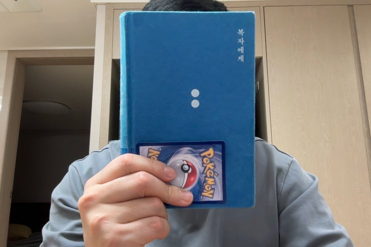

잠시 기러기로 있는 동안 퇴근 후 시간이 될 때 마다 김금희 작가님의 소설 '복자에게'를 읽었습니다. 지인이 추천하여서
읽은 책인데 주인공의 섬세한 감정 및 주변 배경 묘사와 몰입감이 돋보이는 작품이었습니다.
소설은 대부분 1인칭 시점으로 진행됩니다. 주인공은 어린 시절 집안이 망하는 불행한 이유로 제주도 고모 댁에서 잠시 살
았다가 다시 서울로 올라가게 되는데, 나중에 어른이 되어 판사가 되었으나 특유의 불의를 보면 욱 하는 버릇 때문에 어린
시절을 보냈던 그 제주도로 좌천됩니다. 이 때 주인공이 어린시절 친구들과 주변인들을 다시 만나면서 겪는 이야기가 이
책의 대부분의 내용입니다.
책은 어떤 특별한 스토리가 있진 않습니다. 스토리라고 한다면 주인공이 좌천 된 후 이것저것 사람들을 만나다가 다시 제
주도에서 나온다는 것입니다. 그러나 주인공이 만나는 사람들에 따라 변해가는 주인공 내면에 대한 묘사가 일품입니다. 워
낙 글이 물 흐르듯 씌여지고 묘사가 잘 되어 있다보니 읽는 저도 주인공의 심정에 동감하면서 마치 진짜 제주도에 살고 있
는 좌천 당한 여성 판사가 된 듯한 몰입감을 느낄 수 있었습니다.
섬세한 감정의 묘사를 중요시 하거나 담담한 가벼운 소설을 읽고 싶은 분이라면 한 번 읽어볼만한 소설이라고 생각합니다.
다만 위에도 말했듯이 스토리라고 할 만한 것이 없는, 일종의 (가상 인물의) 수필과도 같은 느낌의 소설이기 때문에 멋진
스토리를 기대하는 분들게는 다소 실망스러울 수도 있겠습니다.
아래 몇가지 좋았던 구문들과 함께 독서 기록을 마칩니다.
"웃으면 안 될 것 같아서."
"왜 웃으면 안 돼?"
영웅은 대답하지 않고 있다가 "웃으면 정말 멍청한 사자 같은 게 될까봐"라고 했다. 어쩌면 그 말을 들었던 그 순
간에 나는 슬픔에 대해 온전히 알게 되지 않았을까. 마음이 차가워지면서, 묵직한 추가 달린 듯 몸이 어딘가로
기우는 느낌이었다. 어느 쪽으로? 여태껏 가늠하지 못한, 그럴 필요가 없었던 세상 편으로, 이를테면 영웅이 사
자가 되고 싶다며 더는 헤헤거릴 수 없는 세상. 우리의 대화는 잠시 끊겼다. 이윽고 영웅이 학원 갈 시간이 되었
다며 작별인사를 하자고 했다.
청년은 밥 은 먹었니? 하더니 괜찮다고 하는데도 바로 보이는 맥줏집에서 치킨을 배달시켰다. 그리고 잘데는 있
냐. 그 친척집은 여기서 가깝냐고 묻더니 단도직입적으로 말해서 걔는 널 안 좋아해, 라고 정곡을 찔렀다. 하필
이면 그 말을 다 발라 먹은 치킨 조각을 비닐봉지에 홱 던져넣으며 해서 고오세는 기분이 이상했다. 자기 마음이
다 먹고 내버린 닭뼈가 된 기분이었다.
가장 격렬하게 법을 거부하는 존재가 있다면 그건 다름 아닌 피고인이었다.
법의 엄정함과 위력, 잔인함을 목도하는 것도 그들을 통해 서였다. 법정에서 선고된 형량을 받아들이지 못해 난
동을 부리는 피고인과, 그가 포승줄에 묶여 나갈 때 울부짖는 그 의 가족들을 처음 보고 난 뒤 동기생 친구는 화
장실로 달려가 속을 게워내기도 했다. 그 친구의 등을 두드리면서 나는 법률문장론 교수에게 들은 말을 해주었
다.
'법을 다루는 사람들은 메스를 든 의사와 같다'는 말이었다. 의사들에게 인체를 찢는 용기가 필요한 것처럼 우리
역시 타인의 삶을 찢고 들어가는 용기가 필요하다. 하지만 타인의 삶 속으로 들 어가야 하는 자가 필연적으로 짊
어지게 되는 무게와 끊임없이 유동하는 내면의 갈등과 번민은 아무리 시간이 지나도 익숙해지지 않았다.
'여름 안에서'의 사장은 당연히 처음 보는데도 어딘가 낯 익었다. 내게 속은 것을 알았던 그 여름날의 풍경을 오
세가 아주 놀랍도록 실감 나게 이야기해주었기 때문이었다. 나는 내게 전달되었어야 할 그 편지 덕분에 그가 사
랑 전문가가 되었다는 오세의 말이 생각나서 잠깐 웃음을 참았다. 그러자 영웅이 "방금 누구 생각했어?" 하고 물
었고 내가 아무 생각도 안 했다고 하자 거짓말하지 말라고 놀렸다.
"방금 누나 그 표정, 정말 기쁠 때만 나오는 표정이야." 계산을 하려는데 일견 무뚝뚝하고 강한 인상이었던 사장
이 아주 살갑게 "맛은 있으셨나요?" 하고 물었다. 그리고 방금 자기가 옆집에서 얻어왔다며 갓 볶은 땅콩을 한줌
내 밀었다. 나는 손을 내밀어 그 따끈따끈하고 작은 것을 받았 다. 그리고 그제야 비로소 내가 받지 못했던 오세
의 편지를 뒤늦게 쥐어본 기분이 들었다.